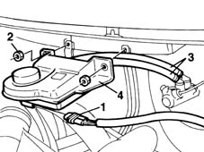

3330C30 brake fluid reservoir - r + r and wash inside
- Path
- Procedures > 33 BRAKING SYSTEM > 3330 HYDRAULIC BRAKING SYSTEM > 3330C brake pump, reservoir and load proportioning valve > 3330C30 brake fluid reservoir - r + r and wash inside
- Kind
- repair procedure (removal / refitting; the operation number is the code)
- Applies to
- all engines; all production periods
- Interactive page
- https://sloeber94.github.io/elrnDB-fMltpl/en/#/2891620
Applies to: all engines; all production periods
 Removing
Removing
 Refitting
RefittingDisconnect the battery negative (-) terminal.
Drain the brake fluid from the reservoir.
1. Disconnect the electrical connection for the brake fluid level sensor.
 | Name | Connector |
|---|---|---|
1 | Brake fluid level sensor (switch) | K25 |
2. Undo the nuts fixing the brake fluid reservoir.
3. Disconnect the reservoir fluid pipes from the master cylinder.
4. Remove the brake fluid reservoir.

Applies to: all engines; all production periods
Refitting
RemovingConnect the electrical connection for the brake fluid level sensor.
Tighten the bolts fixing the brake fluid reservoir.
Connect the fluid pipes to the master cylinder.
Connect the negative (-) battery terminal.